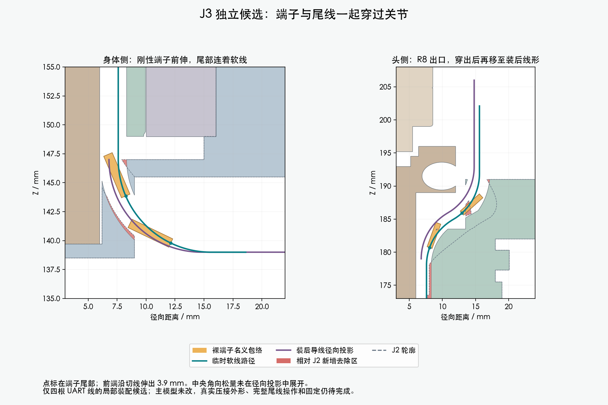
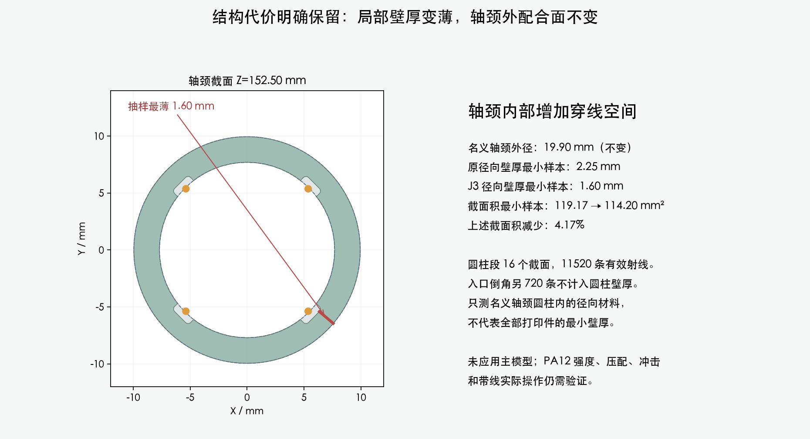

J3独立候选。主模型M1.47、STL与装配视频未改；头侧出口仍有待清理的薄边。完整线束为BLOCKED，这不是加工放行。
H06局部端子与随行软线的连续穿入包络、穿出后22个理线阶段、与另外3根已就位UART线的装入顺序检查通过；J3保存重载后的130个头部姿态也通过。两件打印候选仍未应用；头侧出口还留有薄边，完整固定、身体松散尾线操作、俯仰段/CAM和其余7根活动线未完成。主模型保持M1.47。
采用JST SH官方目录的名义端子外形，结合已收到的完整料号压接参考与AMASS插合图。真实压接外形和公差仍未给齐；本地来源和限制均保留。

穿入使用R8弯曲，尾部中心经过半径7.6mm通道；随后移到装后的6.8mm位置。内部长度增加5.10mm，由未固定的尾线补入。下端从弯前3mm暂存位置开始，尚未包括PH胶壳操作。
| 已验证范围 | 结果 |
|---|---|
| 4方向连续端子／随行线／第一次理线包络 | PASS；对实际重载实体复核 |
| 名义端子／软线净空下界 | 0.306／0.302mm |
| 穿出后规定线形调整 | 88项PASS；松量引入仍为有限样本 |
| 逐根穿线避开其余3根已就位线 | 12组有向检查PASS |
| 装后头部姿态 | 130组合／520线姿态实例PASS |
| 真实手工操作、完整固定及加工长度 | 尚未完成 |

圆柱段16个截面共11520条射线；入口倒角另720条列为不适用。截面积统计使用全部17个截面。这些值不能代替全件壁厚或PA12承载结论。
头侧出口还留有一片薄边：45°剖面宽约0.277mm，侧向约1mm后与主体连上。它来自早期J1开通道，并非独立零件或显示褶皱。已定位来源，下一步需整理开口并复核局部材料；当前没有删除它或改动主模型。
出口薄边、身体端固定与松散尾线操作、俯仰段与CAM实际连接、其他7根活动线和FPC、完整装配与逐线加工长度。上述局部PASS没有关闭这些事项。
详细范围与尺寸依据 · 独立Blender候选 · 回读及运动检查 · 理线检查 · 穿线顺序 · 薄边来源 · 截面采样 · 命令记录 · 来源清单